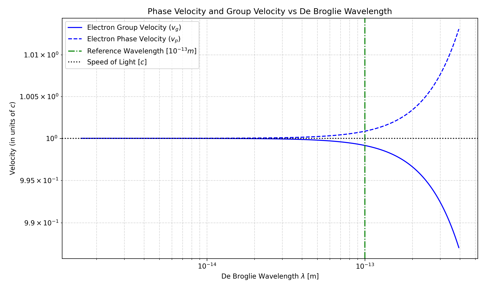
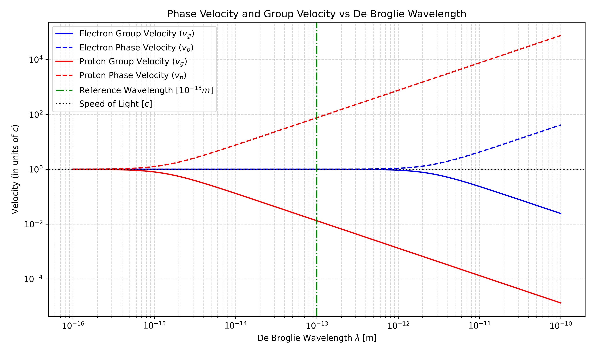

Modern Physics Hw 3#
name:葉品辰
ID:r14229017
date: 2026.04.06
Question 1 : Density of standing waves in cavity#
Show that the de Broglie wavelength of a particle of mass \(m\) and kinetic energy \(KE\) is given by
Question 1 - Answer#
假設與已知 (Assumptions & Preliminaries)#
【已知 1】 物體的能量與動量關係式：
\[E^2 = (m_0 c^2)^2 + (pc)^2 \]\(E\) : 總能量 (Total Energy) \([\text{J}]\)
\(m_0\) : 物體靜止質量 (Rest mass)，\([\text{kg}]\)
\(c\) : 真空中光速 (Speed of light)，\(c \approx 3 \times 10^8 \text{ m}\cdot\text{s}^{-1}\)
\(p\) : 物體動量 ，\([\text{kg}\cdot\text{m}\cdot\text{s}^{-1}]\)
【定義 1】 德布羅依波 (De Broglie Wave) ：
\[\lambda \overset{\text{def}}{=} \frac{h}{p}\]\(\lambda\) : 德布羅依波長 (de Broglie wavelength) \([\text{m}]\)
\(h\) : 普朗克常數 (Planck’s constant) \(h \approx 6.626 \times 10^{-34} \text{ J}\cdot\text{s} \)
\(p\) : 物體動量 (Momentum) \([\text{kg}\cdot\text{m}\cdot\text{s}^{-1}]\)
proof:#
Question 2#
Show that if the total energy \(E\) of a moving particle greatly exceeds its rest energy \(E_0\) (\(E \gg E_0\)), its de Broglie wavelength \(\lambda\) is nearly the same as the wavelength of a photon with the same total energy.
Question 2 - Answer#
已知與假設#
【假設 1】總能量 \(E\) 遠大於其靜止能量 \(E_0\):
\[\begin{split}\begin{gather*} &E &\gg& E_0 \\ &E_0+KE &\gg& E_0\\ &KE &\gg& E_0\\ \Rightarrow E= & KE+E_0 &\sim& KE \end{gather*}\end{split}\]\(1+10^{5} \gg 1 \Rightarrow 10^{5} \gg 1\)
【已知 1】 物體的能量與動量關係式：
\[E^2 = (m_0 c^2)^2 + (pc)^2 \]\(E\) : 總能量 (Total Energy) \([\text{J}]\)
\(m_0\) : 物體靜止質量 (Rest mass)，\([\text{kg}]\)
\(c\) : 真空中光速 (Speed of light)，\(c \approx 3 \times 10^8 \text{ m}\cdot\text{s}^{-1}\)
\(p\) : 物體動量 ，\([\text{kg}\cdot\text{m}\cdot\text{s}^{-1}]\)
【已知 2】 光子沒有靜止質量：
\[m_0 = 0\]\(m_0\) : 光子靜止質量 (Rest mass)，\([\text{kg}]\)
【定義 1】 德布羅依波 (De Broglie Wave) ：
\[\lambda \overset{\text{def}}{=} \frac{h}{p}\]\(\lambda\) : 德布羅依波長 (de Broglie wavelength) \([\text{m}]\)
\(h\) : 普朗克常數 (Planck’s constant) \(h \approx 6.626 \times 10^{-34} \text{ J}\cdot\text{s} \)
\(p\) : 物體動量 (Momentum) \([\text{kg}\cdot\text{m}\cdot\text{s}^{-1}]\)
【已知 3】 特定能量 \(E\) 的光子波長 \(\lambda_{\text{photon}}\)：
\[\begin{split}\begin{gather*} E^2 &\overset{\text{已知 1}}{=}& (pc)^2 + (m_0 c^2)^2 \\ E^2 &\overset{\text{已知 2}}{=}& (pc)^2 \\ \frac{E}{c} &=& p \\ \frac{E}{c} &\overset{\text{定義 1}}{=}& \frac{h}{\lambda_{\text{photon}}} \\ \lambda_{\text{photon}} &=& \frac{hc}{E} \end{gather*}\end{split}\]
proof#
\(E \gg mc^2\) 的情況下，\(\lambda_{\text{particle}} \approx \lambda_{\text{photon}}\)
Question 3#
An electron and a proton have the same kinetic energy (\(KE\)). Compare the wavelengths (\(\lambda\)), phase velocities (\(v_p\)), and group velocities (\(v_g\)) of their de Broglie waves.
Question 3 - Answer#
已知與假設#
【假設 1】動能相同:
\[KE_{\text{electron}} = KE_{\text{proton}}\]【已知 1】古典動能:
\[KE = \frac{1}{2}mv^2\]在 不失一般性 的情況下，依題目我們可以直接考慮 古典動能
【定義 1】 德布羅依波 (De Broglie Wave) ：
\[\lambda \overset{\text{def}}{=} \frac{h}{p}\]\(\lambda\) : 德布羅依波長 (de Broglie wavelength) \([\text{m}]\)
\(h\) : 普朗克常數 (Planck’s constant) \(h \approx 6.626 \times 10^{-34} \text{ J}\cdot\text{s} \)
\(p\) : 物體動量 (Momentum) \([\text{kg}\cdot\text{m}\cdot\text{s}^{-1}]\)
【已知 2】質子質量遠大於電子質量:
\[m_e \ll m_p\]電子質量 : \(m_e \sim 9.11 \times 10^{-31} \text{kg}\)
質子質量 : \(m_p \sim 1.67 \times 10^{-27} \text{kg}\)
【已知 3】群速度是物體速度:
\[v_{\text{g}}=v\]【已知 4】群速度乘相速度是光速平方:
\[v_{\text{g}} v_{\text{p}}=c^2\]\(v_{\text{g}}\) 是群速度
\(v_{\text{p}}\) 是相速度
1. 德布羅依波長 (\(\lambda\))#
2. 群速度 (\(v_{\text{g}}\))#
電子的群速度 比 質子的群速度 較 快
3. 相速度 (\(v_{\text{p}}\))#
質子的群速度 比 電子的群速度 較 快
Question 4#
(a) Show that the phase velocity of the de Broglie waves of a particle of mass \(m\) and de Broglie wavelength \(\lambda\) is given by
(b) Compare the phase and group velocities of an electron whose de Broglie wavelength is exactly \(1 \times 10^{-13} \text{m}\).
Question 4 - Answer#
假設與已知 (Assumptions & Preliminaries)#
【已知 1】 勞侖茲因子 (Lorentz factor)
\[\gamma = \frac{1}{\sqrt{1-\frac{v^2}{c^2}}}\]【已知 2】 總能量 (Total Energy)：
\[E = \gamma m_0 c^2 \]\(E\) : 總能量 (Total Energy) \([\text{J}]\)
\(\gamma\) : 勞侖茲因子 (Lorentz factor) \(\gamma \overset{\text{已知 1}}{=} \frac{1}{\sqrt{1-v^2/c^2}}\)
\(m_0\) : 物體靜止質量 (Rest mass)，\([\text{kg}]\)
\(c\) : 真空中光速 (Speed of light)，\(c \approx 3 \times 10^8 \text{ m}\cdot\text{s}^{-1}\)
【已知 3】 物體的能量與動量關係式：
\[E^2 = (m_0 c^2)^2 + (pc)^2 \]\(E\) : 總能量 (Total Energy) \([\text{J}]\)
\(m_0\) : 物體靜止質量 (Rest mass)，\([\text{kg}]\)
\(c\) : 真空中光速 (Speed of light)，\(c \approx 3 \times 10^8 \text{ m}\cdot\text{s}^{-1}\)
\(p\) : 物體動量 ，\([\text{kg}\cdot\text{m}\cdot\text{s}^{-1}]\)
【定義 1】 德布羅依波 (De Broglie Wave) ：
\[\lambda \overset{\text{def}}{=} \frac{h}{p}\]\(\lambda\) : 德布羅依波長 (de Broglie wavelength) \([\text{m}]\)
\(h\) : 普朗克常數 (Planck’s constant) \(h \approx 6.626 \times 10^{-34} \text{ J}\cdot\text{s} \)
\(p\) : 物體動量 (Momentum) \([\text{kg}\cdot\text{m}\cdot\text{s}^{-1}]\)
【已知 4】群速度是物體速度:
\[v_{\text{g}}=v\]【已知 5】群速度乘相速度是光速平方:
\[v_{\text{g}} v_{\text{p}}=c^2\]\(v_{\text{g}}\) 是群速度
\(v_{\text{p}}\) 是相速度
【已知 5】群速度乘相速度是光速平方:
\[v_{\text{g}} v_{\text{p}}=c^2\]\(v_{\text{g}}\) 是群速度
\(v_{\text{p}}\) 是相速度
【已知 6】電子資訊:
\(m_{\text{e}} \sim 9.11e-31 \text{ kg} \)
proof (a)#
compare (b)#
計算 \(v_{\text{g}}\)
計算 \(v_{\text{p}}\)


Question 5#
A beam of \(50 \text{ keV}\) electrons is directed at a crystal and diffracted electrons are found at an angle of \(50^\circ\) relative to the original beam. What is the spacing \(d\) of the atomic planes of the crystal? A relativistic calculation is needed for \(\lambda\).
Question 5 - Answer#
已知與假設#
【已知 1】 德布羅依波長與動能關係式
\[\lambda \overset{\text{Q1}}{=} \frac{hc}{\sqrt{KE(KE + 2m_0c^2)}} \]\(\lambda\) : 德布羅依波長 (de Broglie wavelength) \([\text{m}]\)
\(h\) : 普朗克常數 (Planck’s constant) \(h \approx 6.626 \times 10^{-34} \text{ J}\cdot\text{s} \)
\(KE\) : 動能 (Kinetic Energy) \([\text{J}]\)
\(m_0\) : 物體靜止質量 (Rest mass)，\([\text{kg}]\)
\(c\) : 真空中光速 (Speed of light)，\(c \approx 3 \times 10^8 \text{ m}\cdot\text{s}^{-1}\)
【已知 2】 布拉格定律 (Bragg’s Law)
\[2d \sin \theta = n\lambda, \quad n = 1, 2, 3,\dots\]\(d\) 是布拉格平面之間的距離
\(\theta\) 是入射 X 射線與布拉格平面之間的夾角 （注意：非與平面法線夾角，一般來說 \(\theta\) 會是入射光與折射光夾角的一半）
\(n\) 是繞射的階數，訊號最強的情況是 \(n=1\)
\(\lambda\) 是 X 射線的波長
【已知 3】 一些常數和題目給的
\(hc \approx 1240 \text{ eV}\cdot\text{nm} = 1.24 \text{ keV}\cdot\text{nm}\)
\(KE = 50 \text{ keV}\)
\(E_0 = 511 \text{ keV}\) (Rest energy of an electron)
入射和射出夾角 : \(50^\circ\)
\(n\)取信號最強的情況
proof:#
程式#
Q4-b#
import numpy as np
import matplotlib.pyplot as plt
# --- 步驟 A: 定義物理常數 ---
h = 6.626e-34 # 普朗克常數 (J·s)
c = 3e8 # 光速 (m/s)
m_e = 9.109e-31 # 電子靜止質量 (kg)
m_p = 1.672e-27 # 質子靜止質量 (kg)
# --- 步驟 B: 設定觀察區間 ---
# 波長範圍 (設定從 10^-16 到 10^-10 公尺，這範圍涵蓋了相對論效應最明顯的區域)
lambdas = np.logspace(-16, -10, 500)
# --- 步驟 C: 定義核心計算函數 ---
def calculate_velocities(m0, lambdas):
"""計算給定靜止質量與波長陣列下的群速度與相速度"""
# 為了程式碼簡潔與執行效能，先把公式中重複出現的龐大項先算出來
term = (lambdas**2 * m0**2 * c**2) / h**2
# 群速度 v_g (除以 c 轉換為相對光速的比例)
vg_c = np.sqrt(1 / (1 + term))
# 相速度 v_p (除以 c 轉換為相對光速的比例)
vp_c = np.sqrt(1 + term)
return vg_c, vp_c
# 利用 numpy 的向量化計算，一次算出所有波長下的速度
vg_e, vp_e = calculate_velocities(m_e, lambdas)
vg_p, vp_p = calculate_velocities(m_p, lambdas)
# --- 步驟 D: 繪圖 ---
plt.figure(figsize=(10, 6))
# 繪製電子 (藍色) - 實線為群速度，虛線為相速度
plt.plot(lambdas, vg_e, 'b-', label='Electron Group Velocity ($v_g$)')
plt.plot(lambdas, vp_e, 'b--', label='Electron Phase Velocity ($v_p$)')
# 繪製質子 (紅色) - 實線為群速度，虛線為相速度
plt.plot(lambdas, vg_p, 'r-', label='Proton Group Velocity ($v_g$)')
plt.plot(lambdas, vp_p, 'r--', label='Proton Phase Velocity ($v_p$)')
# 畫出一條垂直於 10^-13 m 的線
plt.axvline(1e-13, color='g', linestyle='-.', label='Reference Wavelength [$10^{-13} m$]')
# 設定對數座標軸與基準線
plt.xscale('log')
plt.yscale('log')
plt.axhline(1, color='k', linestyle=':', label='Speed of Light [$c$]')
# 設定標籤、標題與圖例 (Legend)
plt.xlabel('De Broglie Wavelength $\lambda$ [m]')
plt.ylabel('Velocity (in units of $c$)')
plt.title('Phase Velocity and Group Velocity vs De Broglie Wavelength')
plt.legend(loc='best')
plt.grid(True, which="both", ls="--", alpha=0.5)
plt.tight_layout()
plt.savefig('velocity_plot.png', dpi=300) # 儲存高解析度圖片
plt.show()